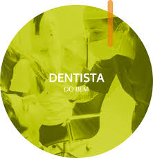

Sobre nós
A Turma do Bem é uma organização sem fins lucrativos que tem como missão levar saúde bucal e sorrisos para crianças e adolescentes em situação de vulnerabilidade social. Fundada em 2003, a ONG já impactou a vida de milhares de jovens por meio de tratamentos odontológicos gratuitos e ações educativas.
Nossa equipe é composta por voluntários dedicados, incluindo dentistas, estudantes de odontologia e profissionais de diversas áreas, que trabalham juntos para proporcionar um futuro melhor para aqueles que mais precisam. Acreditamos que um sorriso saudável é um direito de todos, e nos esforçamos para garantir que nossas crianças e adolescentes tenham acesso a esse direito fundamental.
Nossa visão
Ser referência nacional em ações de saúde bucal para crianças e adolescentes em situação de vulnerabilidade social.
Programas
O Dentista do Bem é o principal programa da TdB, destinado a crianças e adolescentes em situação de vulnerabilidade social na faixa dos 11 a 17 anos. Os nossos beneficiários possuem graves problemas bucais e não têm condições financeiras de pagar pelo tratamento. Após serem selecionados e entrarem no programa, os jovens recebem atendimento odontológico e gratuito – independente da complexidade dos casos – até completarem 18 anos.
Apolônias do Bem oferece tratamento odontológico e gratuito para mulheres cis e trans que vivenciaram situações de violência e tiveram a dentição afetada pelas agressões. As beneficiárias são selecionadas através de triagens em que passam por um rápido exame oral, não invasivo, e respondem a uma ferramenta científica que mede o impacto da saúde bucal na qualidade de vida de uma pessoa.